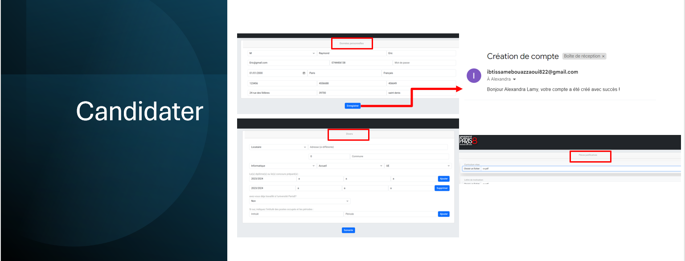
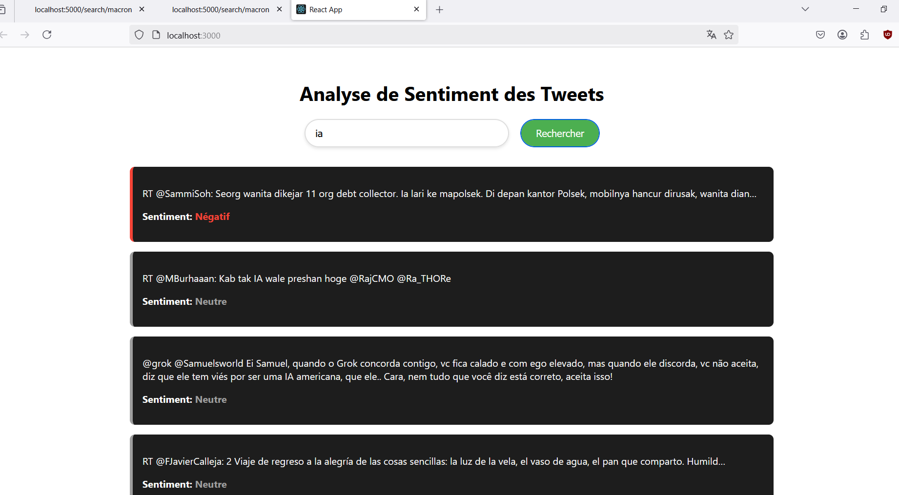
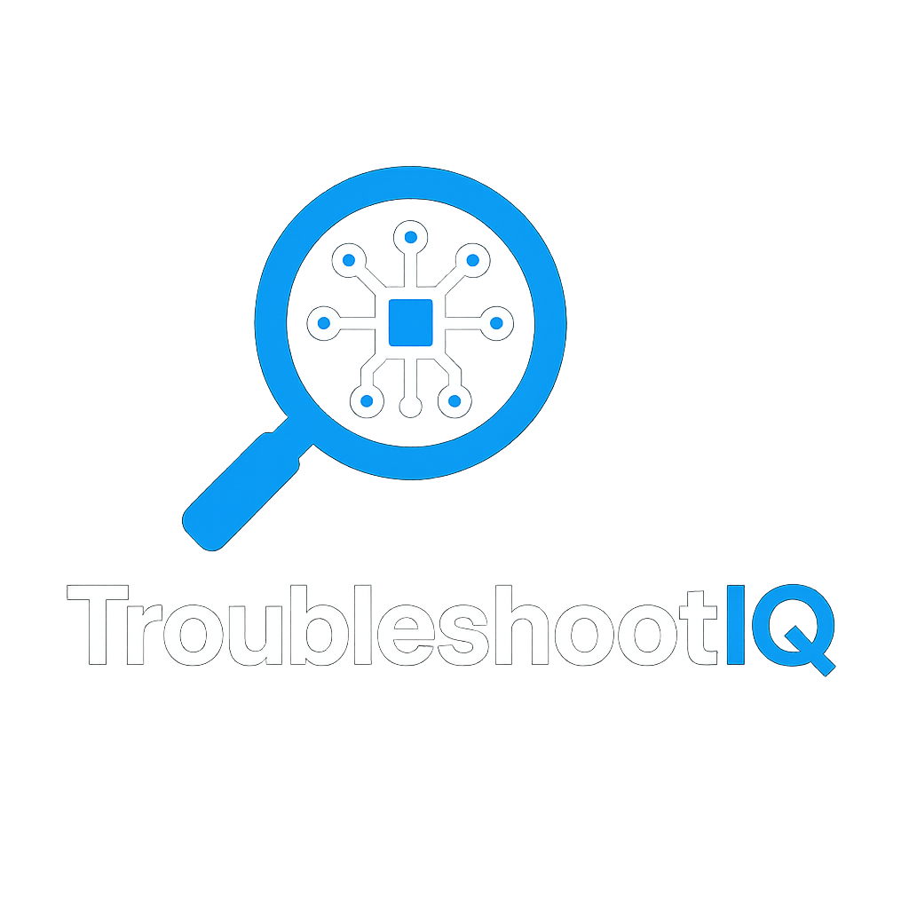
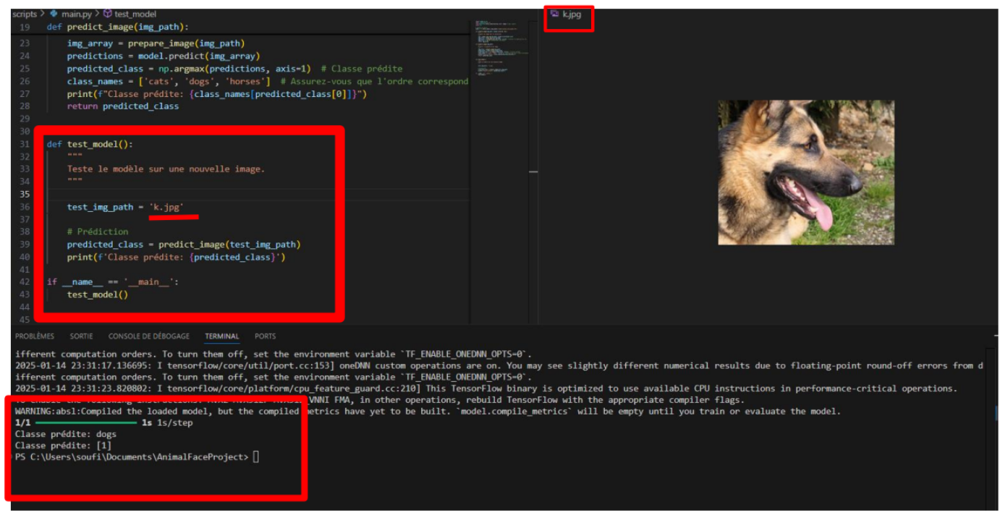

Data Science & Machine Learning
Analyse de données, feature engineering, création de modèles prédictifs et détection d’anomalies sur des données structurées.
Je développe des modèles de Machine Learning et des solutions d’intelligence artificielle pour analyser les données et créer des outils d’aide à la décision. Intérêts : Data Science, Machine Learning, Deep Learning et IA appliquée.
Île-de-France • Data Science & AI
Ce que je peux apporter dans un projet Data Science / IA.
Analyse de données, feature engineering, création de modèles prédictifs et détection d’anomalies sur des données structurées.
Développement de modèles de deep learning pour la vision par ordinateur et la classification d’images.
Collecte, structuration, transformation et exploitation de données pour des pipelines analytiques et décisionnels.
Quelques réalisations en Data Science, IA et développement.

Développement full-stack • CRUD • Base de données

NLP • Analyse de texte • Application web

Machine Learning • Anomaly Detection • Data Analysis

Deep Learning • Computer Vision • TensorFlow
Parcours universitaire orienté Data Science et Intelligence Artificielle.
Université Paris 8 • 2025–2026
Approfondissement en Machine Learning, Deep Learning, modélisation, analyse de données et intelligence artificielle appliquée.
Université Paris 8 • 2024–2025
Formation axée sur la gestion de données, les pipelines data, l’analyse de données et les technologies du Big Data.
Université Paris 8 • 2023–2024
Bases solides en programmation, architecture logicielle et développement d’applications.
Stages et expériences en développement et IA.
Avril 2025 – Juillet 2025
Développement d’un système intelligent d’analyse de logs pour automatiser la détection d’anomalies. Préparation des données, expérimentation de modèles et analyse des résultats.
Mars 2024 – Juillet 2024
Développement d’applications web, gestion de base de données, création d’interfaces et implémentation de fonctionnalités back-end.
Technologies et outils maîtrisés.
Machine Learning : régression, SVM, KNN, Random Forest, K-Means, Isolation Forest
Deep Learning : CNN, TensorFlow, Keras, OpenCV
Analyse de données : Pandas, Python, SQL, visualisation, préparation de données
Langages : Python, SQL, R, JavaScript, PHP
Bases de données : PostgreSQL, MongoDB, SQL Server
Outils : Git, Snowflake, Talend, Spark, Tableau, Power BI, VirtualBox, Proxmox
Écris-moi, je réponds rapidement.
Email : ibtissambouazzaoui2003@gmail.com
Téléphone : 07 44 40 61 38
Localisation : Île-de-France